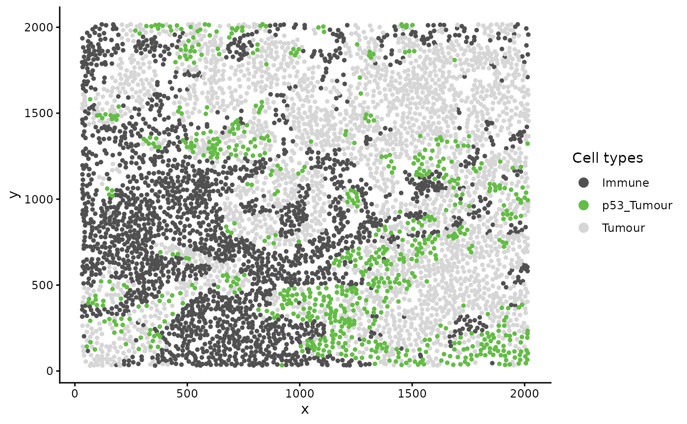
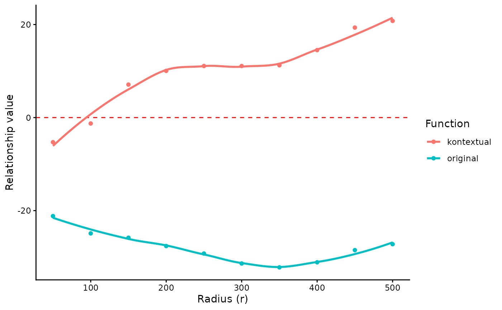
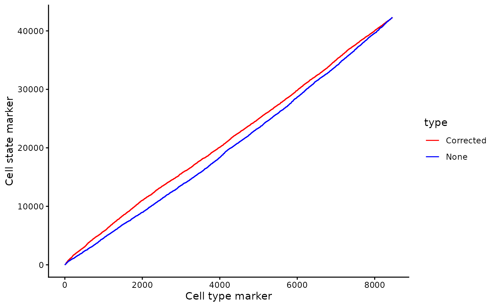
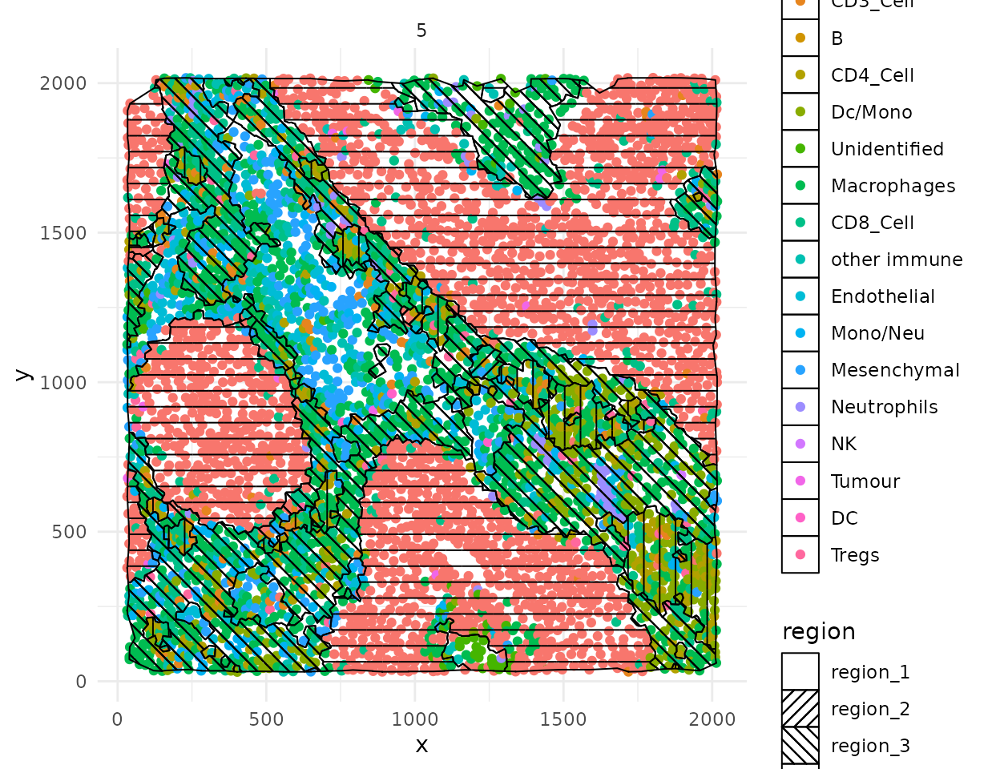
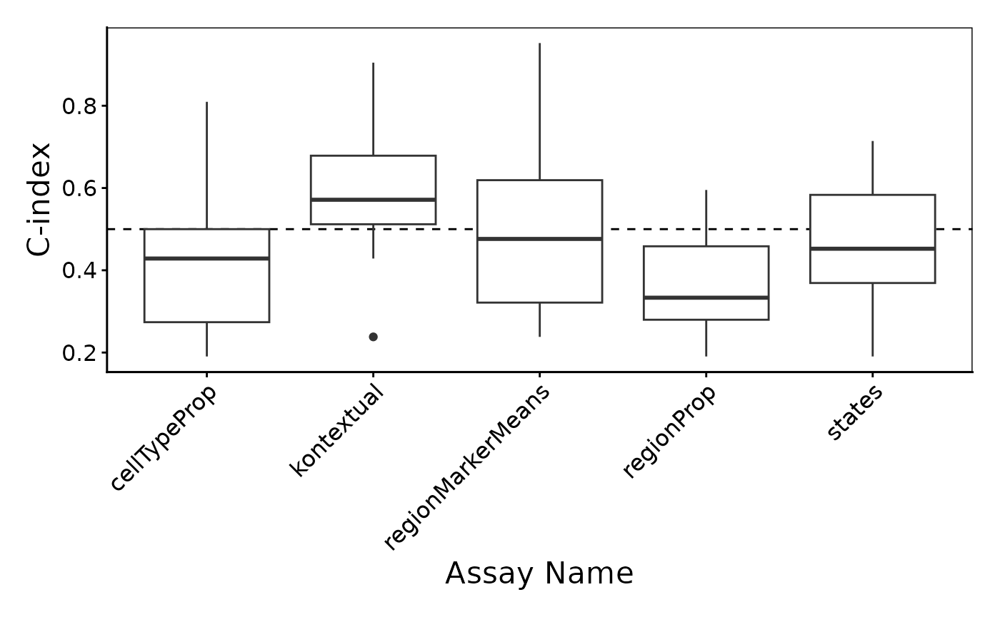

Statial
Farhan Ameen
School of Mathematics and Statistics, University of Sydney, AustraliaSourish Iyengar
School of Mathematics and Statistics, University of Sydney, AustraliaAlex Qin
School of Mathematics and Statistics, University of Sydney, AustraliaEllis Patrick
Westmead Institute for Medical Research, University of Sydney, AustraliaSchool of Mathematics and Statistics, University of Sydney, Australia26 October 2026
Source:vignettes/Statial.Rmd
Statial.RmdInstallation
# Install the package from Bioconductor
if (!requireNamespace("BiocManager", quietly = TRUE)) {
install.packages("BiocManager")
}
BiocManager::install("Statial")Overview
There are over 37 trillion cells in the human body, each taking up
different forms and functions. The behaviour of these cells can be
described by canonical characteristics, but their functions can also
dynamically change based on their environmental context. Understanding
the interplay between cells is key to understanding their mechanisms of
action and how they contribute to human disease. Statial is
a suite of functions to quantify the spatial relationships between cell
types. This guide will provide a step-by-step overview of some key
functions within Statial.
Loading example data
To illustrate the functionality of Statial we will use a multiplexed ion beam imaging by time-of-flight (MIBI-TOF) dataset profiling tissue from triple-negative breast cancer patients by Keren et al., 2018. This dataset simultaneously quantifies in situ expression of 36 proteins in 34 immune rich patients. Note: The data contains some “uninformative” probes and the original cohort included 41 patients.
These images are stored in a SingleCellExperiment object
called kerenSCE. This object contains 57811 cells across 10
images and includes information on cell type and patient survival.
Note: The original dataset was reduced down from 41 images to 10 images for the purposes of this vignette, due to size restrictions.
# Load breast cancer
data("kerenSCE")
kerenSCE
#> class: SingleCellExperiment
#> dim: 48 57811
#> metadata(0):
#> assays(1): intensities
#> rownames(48): Na Si ... Ta Au
#> rowData names(0):
#> colnames(57811): 1 2 ... 171281 171282
#> colData names(8): x y ... Survival_days_capped Censored
#> reducedDimNames(1): z
#> mainExpName: NULL
#> altExpNames(0):Kontextual: Context aware spatial relationships
Kontextual is a method for performing inference on cell
localisation which explicitly defines the contexts in which spatial
relationships between cells can be identified and interpreted. These
contexts may represent landmarks, spatial domains, or groups of
functionally similar cells which are consistent across regions. By
modelling spatial relationships between cells relative to these
contexts, Kontextual produces robust spatial
quantifications that are not confounded by biases such as the choice of
region to image and the tissue structure present in the images.
In this example we demonstrate how cell type hierarchies can be used
as a means to derive appropriate “contexts” for the evaluation of cell
localisation. We then demonstrate the types of conclusions which
Kontextual enables.
Using cell type hierarchies to define a “context”
A cell type hierarchy may be used to define the “context” in which cell type relationships are evaluated within. A cell type hierarchy defines how cell types are functionally related to one another. The bottom of the hierarchy represents homogeneous populations of a cell type (child), the cell populations at the nodes of the hierarchy represent broader parent populations with shared generalised function. For example CD4 T cells may be considered a child population to the Immune parent population.
There are two ways to define the cell type hierarchy. First, they can be defined based on our biological understanding of the cell types. We can represent this by creating a named list containing the names of each parent and the associated vector of child cell types.
Note: The all vector must be created to include
cell types which do not have a parent e.g. the undefined cell
type in this data set.
# Examine all cell types in image
unique(kerenSCE$cellType)
#> [1] "Keratin_Tumour" "CD3_Cell" "B" "CD4_Cell"
#> [5] "Dc/Mono" "Unidentified" "Macrophages" "CD8_Cell"
#> [9] "other immune" "Endothelial" "Mono/Neu" "Mesenchymal"
#> [13] "Neutrophils" "NK" "Tumour" "DC"
#> [17] "Tregs"
# Named list of parents and their child cell types
biologicalHierarchy = list(
"tumour" = c("Keratin_Tumour", "Tumour"),
"tcells" = c("CD3_Cell", "CD4_Cell", "CD8_Cell", "Tregs"),
"myeloid" = c("Dc/Mono", "DC", "Mono/Neu", "Macrophages", "Neutrophils"),
"tissue" = c("Endothelial", "Mesenchymal")
)
# Adding more broader immune parent populationse
biologicalHierarchy$immune = c(biologicalHierarchy$tcells,
biologicalHierarchy$myeloid,
"NK", "other immune", "B")
# Creating a vector for all cellTypes
all <- unique(kerenSCE$cellType)Alternatively, you can use the treeKor bioconductor
package treekoR
to define these hierarchies in a data driven way.
Note: These parent populations may not be accurate as we are using a small subset of the data.
# Calculate hierarchy using treekoR
kerenTree <- getClusterTree(t(assay(kerenSCE, "intensities")),
kerenSCE$cellType,
hierarchy_method="hopach",
hopach_K = 1)
# Convert treekoR result to a name list of parents and children.
treekorParents = getParentPhylo(kerenTree)
treekorParents
#> $parent_1
#> [1] "Dc/Mono" "Macrophages" "NK"
#>
#> $parent_2
#> [1] "CD3_Cell" "B" "CD4_Cell" "CD8_Cell" "Tregs"
#>
#> $parent_3
#> [1] "Endothelial" "Mesenchymal" "DC"
#>
#> $parent_4
#> [1] "Unidentified" "other immune" "Mono/Neu" "Neutrophils" "Tumour"Application on triple negative breast cancer image.
Here we examine an image highlighted in the Keren et al. 2018 manuscript where accounting for context information enables new conclusions. In image 6 of the Keren et al. dataset, we can see that p53+ tumour cells and immune cells are dispersed i.e. these two cell types are not mixing. However we can also see that p53+ tumour cells appear much more localised to immune cells relative to the tumour context (tumour cells and p53+ tumour cells).
# Lets define a new cell type vector
kerenSCE$cellTypeNew <- kerenSCE$cellType
# Select for all cells that express higher than baseline level of p53
p53Pos <- assay(kerenSCE)["p53", ] > -0.300460
# Find p53+ tumour cells
kerenSCE$cellTypeNew[kerenSCE$cellType %in% biologicalHierarchy$tumour] <- "Tumour"
kerenSCE$cellTypeNew[p53Pos & kerenSCE$cellType %in% biologicalHierarchy$tumour] <- "p53_Tumour"
# Group all immune cells under the name "Immune"
kerenSCE$cellTypeNew[kerenSCE$cellType %in% biologicalHierarchy$immune] <- "Immune"
# Plot image 6
kerenSCE |>
colData() |>
as.data.frame() |>
filter(imageID == "6", cellTypeNew %in% c("Immune", "Tumour", "p53_Tumour")) |>
arrange(cellTypeNew) |>
ggplot(aes(x = x, y = y, color = cellTypeNew)) +
geom_point(size = 1) +
scale_colour_manual(values = c("Immune" = "#505050", "p53_Tumour" = "#64BC46", "Tumour" = "#D6D6D6")) +
guides(colour = guide_legend(title = "Cell types", override.aes = list(size = 3)))
Kontextual accepts a SingleCellExperiment
object, a single image, or list of images from a
SingleCellExperiment object, which gets passed into the
cells argument. The two cell types which will be evaluated
are specified in the to and from arguments. A
parent population must also be specified in the parent
argument, note the parent cell population must include the
to cell type. The argument r will specify the
radius which the cell relationship will be evaluated on.
Kontextual supports parallel processing, the number of
cores can be specified using the cores argument.
Kontextual can take a single value or multiple values for
each argument and will test all combinations of the arguments
specified.
We can calculate these relationships across all images for a single radius (r = 100). Small radii will examine local spatial relationships, whereas larger radii will examine global spatial relationships.
p53_Kontextual <- Kontextual(
cells = kerenSCE,
r = 100,
from = "Immune",
to = "p53_Tumour",
parent = c("p53_Tumour", "Tumour"),
cellType = "cellTypeNew"
)
p53_Kontextual
#> imageID test original kontextual r inhomL
#> 1 1 Immune__p53_Tumour -16.212016 -1.6815952 100 FALSE
#> 2 14 Immune__p53_Tumour -14.671281 -4.2879138 100 FALSE
#> 3 18 Immune__p53_Tumour -1.953366 0.5795853 100 FALSE
#> 4 21 Immune__p53_Tumour -14.300802 -7.1425133 100 FALSE
#> 5 29 Immune__p53_Tumour -20.728463 -7.0172785 100 FALSE
#> 6 3 Immune__p53_Tumour 1.719549 44.5060581 100 FALSE
#> 7 32 Immune__p53_Tumour -18.174569 -10.8972277 100 FALSE
#> 8 35 Immune__p53_Tumour -75.980619 -66.2395276 100 FALSE
#> 9 5 Immune__p53_Tumour NA NA 100 FALSE
#> 10 6 Immune__p53_Tumour -24.897348 -1.2724241 100 FALSEThe kontextCurve function plots the L-function value and
Kontextual values over a range of radii. If the points lie above the red
line (expected pattern) then localisation is indicated for that radius,
if the points lie below the red line then dispersion is indicated.
As seen in the following plot the L-function produces negative values
over a range of radii, indicating that p53+ tumour cells and
immune cells are dispersed from one another. However by taking
into account the tumour context, Kontextual shows positive
values over some radii, indicating localisation between p53+ tumour
cells and immune cells.
curves <- kontextCurve(
cells = kerenSCE,
from = "Immune",
to = "p53_Tumour",
parent = c("p53_Tumour", "Tumour"),
rs = seq(50, 510, 50),
image = "6",
cellType = "cellTypeNew"
)
kontextPlot(curves)
Alternatively all pairwise cell relationships and their corresponding
parent in the dataset can be tested. A data frame with all pairwise
combinations can be creating using the parentCombinations
function. This function takes in a vector of all the cells, as well as
the named list of parents and children created earlier in the
parentList argument. As shown below the output is a data
frame specifying the to, from, and
parent arguments for Kontextual.
Note: the output of getPhyloParent may also be
using the in the parentList argument, for example if you
wanted to use the treekoR defined hierarchy instead.
# Get all relationships between cell types and their parents
parentDf <- parentCombinations(
all = all,
parentList = biologicalHierarchy
)Calculating all pairwise relationships
Rather than specifying to, from, and
parent in Kontextual, the output from
parentCombinations can be inputed into
Kontextual using the parentDf argument, to
examine all pairwise relationships in the dataset. This chunk will take
a significant amount of time to run, for demonstration the results have
been saved and are loaded in.
# Running Kontextual on all relationships across all images.
kerenKontextual <- Kontextual(
cells = kerenSCE,
parentDf = parentDf,
r = 100
)For every pairwise relationship (named accordingly:
from__to__parent) Kontextual outputs the
L-function values (original) and the Kontextual value. The relationships
where the L-function and Kontextual disagree (e.g. one metric is
positive and the other is negative) represent relationships where adding
context information results in different conclusions on the spatial
relationship between the two cell types.
head(kerenKontextual, 10)
#> imageID test original kontextual r inhomL
#> 1 1 Keratin_Tumour__B__immune -32.547645 -20.8129718 100 FALSE
#> 2 14 Keratin_Tumour__B__immune NA NA 100 FALSE
#> 3 18 Keratin_Tumour__B__immune -2.879684 -0.4266132 100 FALSE
#> 4 21 Keratin_Tumour__B__immune NA NA 100 FALSE
#> 5 29 Keratin_Tumour__B__immune NA NA 100 FALSE
#> 6 3 Keratin_Tumour__B__immune -36.175444 -15.4940620 100 FALSE
#> 7 32 Keratin_Tumour__B__immune -43.187880 -40.6868426 100 FALSE
#> 8 35 Keratin_Tumour__B__immune -66.782273 -46.2862443 100 FALSE
#> 9 5 Keratin_Tumour__B__immune -68.676955 -46.3064625 100 FALSE
#> 10 6 Keratin_Tumour__B__immune -31.393046 -0.4636465 100 FALSEAssociating the relationships with survival outcomes.
To test whether Kontextual relationships are associated with patient
outcomes, or differ between groups of patients, use
kontextualTest. It takes the same parentDf as
Kontextual and a condition: here a
Surv column of survival outcomes.
# add survival column to kerenSCE
kerenSCE$event = 1 - kerenSCE$Censored
kerenSCE$survival = Surv(kerenSCE$Survival_days_capped, kerenSCE$event)
# one survival value per image, named by image
first <- !duplicated(kerenSCE$imageID)
kerenSurv <- setNames(kerenSCE$survival[first], kerenSCE$imageID[first])kontextualTest does not compare the Kontextual values
themselves between patients. In each image it compares the Kontextual
statistic with its exact expectation if the to cells were a
random choice among the cells of their parent population, so that
differences in tissue composition between patients do not by themselves
look like changes in the relationship. The images’ excesses over this
expectation are then related to survival with patients as the units (see
?kontextualTest). With several images per patient, give the
patient column as subject.
# Testing every relationship in parentDf against survival
survivalResults <- kontextualTest(
cells = kerenSCE,
parentDf = parentDf,
condition = "survival",
r = 100
)
topPairs(survivalResults)
#> from to parent
#> Macrophages__Neutrophils__immune Macrophages Neutrophils immune
#> Macrophages__Neutrophils__myeloid Macrophages Neutrophils myeloid
#> other immune__CD3_Cell__tcells other immune CD3_Cell tcells
#> other immune__Tumour__tumour other immune Tumour tumour
#> Endothelial__other immune__immune Endothelial other immune immune
#> CD3_Cell__Endothelial__tissue CD3_Cell Endothelial tissue
#> Endothelial__Mono/Neu__myeloid Endothelial Mono/Neu myeloid
#> CD8_Cell__Neutrophils__myeloid CD8_Cell Neutrophils myeloid
#> Tumour__CD3_Cell__immune Tumour CD3_Cell immune
#> CD3_Cell__Tumour__tumour CD3_Cell Tumour tumour
#> hazard_ratio_sd p_value p_adj
#> Macrophages__Neutrophils__immune 0.1567121 0.00460055 0.8498842
#> Macrophages__Neutrophils__myeloid 0.2163076 0.02856114 0.8498842
#> other immune__CD3_Cell__tcells 0.5054545 0.03408181 0.8498842
#> other immune__Tumour__tumour 0.2333581 0.04308263 0.8498842
#> Endothelial__other immune__immune 1.8731500 0.04633332 0.8498842
#> CD3_Cell__Endothelial__tissue 1.6294272 0.07411592 0.8498842
#> Endothelial__Mono/Neu__myeloid NA 0.07437390 0.8498842
#> CD8_Cell__Neutrophils__myeloid 2.0860787 0.08174464 0.8498842
#> Tumour__CD3_Cell__immune 0.5933010 0.09322871 0.8498842
#> CD3_Cell__Tumour__tumour 0.4202128 0.09756879 0.8498842The results can also be visualised using the signifPlot
function, with a panel for each parent population.
signifPlot(survivalResults)
With 10 patients, 0 relationships are significant after correcting for the number of relationships tested (BH-adjusted p < 0.05). The most significant is Macrophages__Neutrophils__immune, the relationship between Macrophages and Neutrophils relative to the parent population immune (p = 0.0046). Its hazard ratio for a standard deviation increase in the Kontextual excess is 0.16: patients whose Macrophages and Neutrophils cells are more localised relative to the immune population tend to have better survival.
The association can be visualised on a Kaplan-Meier curve. The
Kontextual values of every relationship in every image are in a wide
matrix from prepMatrix; note, to extract the original
L-function values, specify column = "original" in
prepMatrix.
# Converting Kontextual result into data matrix
kontextMat <- prepMatrix(kerenKontextual)
# In the order of the survival vector, for the Kaplan-Meier curve below
kontextMat <- kontextMat[names(kerenSurv), ]
# Replace NAs with 0
kontextMat[is.na(kontextMat)] <- 0We then classify each image as localised or dispersed by comparing
its Kontextual value for this relationship with the median, and plot a
Kaplan-Meier curve using the ggsurvfit package.
# The most significant relationship
survRelationship <- kontextMat[[topName]]
survRelationship <- ifelse(survRelationship > median(survRelationship), "Localised", "Dispersed")
# Plotting Kaplan-Meier curve
survfit2(kerenSurv ~ survRelationship) |>
ggsurvfit() +
ggtitle(topName)
SpatioMark: Identifying continuous changes in cell state
Changes in cell states can be analytically framed as the change in abundance of a gene or protein within a particular cell type. We can use marker expression to identify and quantify evidence of cell interactions that catalyse cell state changes. This approach measures how protein markers in a cell change with spatial proximity and abundance to other cell types. The methods utilised here will thereby provide a framework to explore how the dynamic behaviour of cells are altered by the agents they are surrounded by.
Continuous cell state changes within a single image
The first step in analysing these changes is to calculate the spatial
proximity (getDistances) and abundance
(getAbundances) of each cell to every cell type. These
values will then be stored in the reducedDims slot of the
SingleCellExperiment object under the names
distances and abundances respectively.
kerenSCE <- getDistances(kerenSCE,
maxDist = 200
)
kerenSCE <- getAbundances(kerenSCE,
r = 200
)First, let’s examine the same effect observed earlier with Kontextual - the localisation between p53-positive keratin/tumour cells and macrophages in the context of total keratin/tumour cells for image 6 of the Keren et al. dataset.
Statial provides two main functions to assess this relationship -
calcStateChanges and plotStateChanges. We can
use calcStateChanges to examine the relationship between 2
cell types for 1 marker in a specific image. In this case, we’re
examining the relationship between keratin/tumour cells
(from = Keratin_Tumour) and macrophages
(to = "Macrophages") for the marker p53
(marker = "p53") in image = "6". We can
appreciate that the fdr statistic for this relationship is
significant, with a negative tvalue, indicating that the expression of
p53 in keratin/tumour cells decreases as distance from macrophages
increases.
stateChanges <- calcStateChanges(
cells = kerenSCE,
image = "6",
from = "Keratin_Tumour",
to = "Macrophages",
marker = "p53"
)
stateChanges
#> imageID primaryCellType otherCellType marker coef tval
#> 1 6 Keratin_Tumour Macrophages p53 -0.001402178 -7.010113
#> pval fdr
#> 1 2.868257e-12 2.868257e-12Statial also provides a convenient function for visualising this
interaction - plotStateChanges. Here, again we can specify
image = 6 and our main cell types of interest,
keratin/tumour cells and macrophages, and our marker p53, in the same
format as calcStateChanges.
Through this analysis, we can observe that keratin/tumour cells closer to a group of macrophages tend to have higher expression of p53, as observed in the first graph. This relationship is quantified with the second graph, showing an overall decrease of p53 expression in keratin/tumour cells as distance to macrophages increase.
These results allow us to essentially arrive at the same result as Kontextual, which calculated a localisation between p53+ keratin/tumour cells and macrophages in the wider context of keratin/tumour cells.
p <- plotStateChanges(
cells = kerenSCE,
image = "6",
from = "Keratin_Tumour",
to = "Macrophages",
marker = "p53"
)
p
#> $image
#>
#> $scatter
Continuous cell state changes across all images
Beyond looking at single cell-to-cell interactions for a single
image, we can also look at all interactions across all images. The
calcStateChanges function provided by Statial can be
expanded for this exact purpose - by not specifying cell types, a
marker, or an image, calcStateChanges will examine the most
significant correlations between distance and marker expression across
the entire dataset. Here, we’ve filtered out the most significant
interactions to only include those found within image 6 of the Keren et
al. dataset.
stateChanges <- calcStateChanges(
cells = kerenSCE,
minCells = 100
)
stateChanges |>
filter(imageID == 6) |>
head(n = 10)
#> imageID primaryCellType otherCellType marker coef tval
#> 1 6 Keratin_Tumour Unidentified Na 0.004218419 25.03039
#> 2 6 Keratin_Tumour Macrophages HLA_Class_1 -0.003823497 -24.69629
#> 3 6 Keratin_Tumour CD4_Cell HLA_Class_1 -0.003582774 -23.87797
#> 4 6 Keratin_Tumour Unidentified Beta.catenin 0.005893120 23.41953
#> 5 6 Keratin_Tumour CD8_Cell HLA_Class_1 -0.003154544 -23.13804
#> 6 6 Keratin_Tumour Dc/Mono HLA_Class_1 -0.003353834 -22.98944
#> 7 6 Keratin_Tumour CD3_Cell HLA_Class_1 -0.003123446 -22.63197
#> 8 6 Keratin_Tumour Tumour HLA_Class_1 0.003684079 21.94265
#> 9 6 Keratin_Tumour CD4_Cell Fe -0.003457338 -21.43550
#> 10 6 Keratin_Tumour CD4_Cell phospho.S6 -0.002892457 -20.50767
#> pval fdr
#> 1 6.971648e-127 1.179045e-123
#> 2 7.814253e-124 1.238950e-120
#> 3 1.745242e-116 2.213665e-113
#> 4 1.917245e-112 2.262171e-109
#> 5 5.444541e-110 6.005093e-107
#> 6 1.053130e-108 1.113158e-105
#> 7 1.237988e-105 1.207895e-102
#> 8 8.188258e-100 7.041347e-97
#> 9 1.287478e-95 9.749473e-93
#> 10 3.928912e-88 2.588796e-85In image 6, the majority of the top 10 most significant interactions occur between keratin/tumour cells and an immune population, and many of these interactions appear to involve the HLA class I ligand.
We can examine some of these interactions further with the
plotStateChanges function. Taking a closer examination of
the relationship between macrophages and keratin/tumour HLA class I
expression, the plot below shows us a clear visual correlation - as
macrophage density increases, keratin/tumour cells increase their
expression HLA class I.
Biologically, HLA Class I is a ligand which exists on all nucleated cells, tasked with presenting internal cell antigens for recognition by the immune system, marking aberrant cells for destruction by either CD8+ T cells or NK cells.
p <- plotStateChanges(
cells = kerenSCE,
image = "6",
from = "Keratin_Tumour",
to = "Macrophages",
marker = "HLA_Class_1"
)
p
#> $image
#>
#> $scatter
Next, let’s take a look at the top 10 most significant results across all images.
stateChanges |> head(n = 10)
#> imageID primaryCellType otherCellType marker coef tval
#> 8674 35 CD4_Cell B CD20 -0.029185750 -40.57355
#> 8770 35 CD4_Cell Dc/Mono CD20 0.019125946 40.53436
#> 1819 35 B Dc/Mono phospho.S6 0.005282065 40.41385
#> 8779 35 CD4_Cell Dc/Mono phospho.S6 0.004033218 34.72882
#> 1813 35 B Dc/Mono HLA.DR 0.011120703 34.15344
#> 1971 35 B other immune P 0.011182182 34.14375
#> 8626 35 CD4_Cell CD3_Cell CD20 0.016349492 33.91901
#> 1816 35 B Dc/Mono H3K9ac 0.005096632 33.99856
#> 2011 35 B other immune phospho.S6 0.005986586 33.66466
#> 1818 35 B Dc/Mono H3K27me3 0.006980810 33.22740
#> pval fdr
#> 8674 7.019343e-282 3.561334e-277
#> 8770 1.891267e-281 4.797767e-277
#> 1819 5.306590e-278 8.974505e-274
#> 8779 4.519947e-219 5.733101e-215
#> 1813 8.401034e-212 8.524697e-208
#> 1971 1.056403e-211 8.932944e-208
#> 8626 1.219488e-210 8.838847e-207
#> 1816 3.266533e-210 2.071635e-206
#> 2011 8.545691e-207 4.817491e-203
#> 1818 2.438769e-202 1.237334e-198Immediately, we can appreciate that a couple of these interactions are not biologically plausible. One of the most significant interactions occurs between B cells and CD4 T cells in image 35, where CD4 T cells are found to increase in CD20 expression when in close proximity to B cells. Biologically, CD20 is a highly specific ligand for B cells, and under healthy circumstances are usually not expressed in T cells.
Could this potentially be an artefact of
calcStateChanges? We can examine the image through the
plotStateChanges function, where we indeed observe a strong
increase in CD20 expression in T cells nearby B cell populations.
p <- plotStateChanges(
cells = kerenSCE,
image = "35",
from = "CD4_Cell",
to = "B",
marker = "CD20"
)
p
#> $image
#>
#> $scatter
So why are T cells expressing CD20? This brings us to a key problem of cell segmentation - contamination.
Contamination (Lateral marker spill over)
Contamination, or lateral marker spill over is an issue that results in a cell’s marker expressions being wrongly attributed to another adjacent cell. This issue arises from incorrect segmentation where components of one cell are wrongly determined as belonging to another cell. Alternatively, this issue can arise when antibodies used to tag and measure marker expressions don’t latch on properly to a cell of interest, thereby resulting in residual markers being wrongly assigned as belonging to a cell near the intended target cell. It is important that we either correct or account for this incorrect attribution of markers in our modelling process. This is critical in understanding whether significant cell-cell interactions detected are an artefact of technical measurement errors driven by spill over or are real biological changes that represent a shift in a cell’s state.
To circumvent this problem, Statial provides a function that predicts
the probability that a cell is any particular cell type -
calcContamination. calcContamination returns a
dataframe of probabilities demarcating the chance of a cell being any
particular cell type. This dataframe is stored under
contaminations in the reducedDim slot of the
SingleCellExperiment object. It also provides the
rfMainCellProb column, which provides the probability that
a cell is indeed the cell type it has been designated. E.g. For a cell
designated as CD8, rfMainCellProb could give a 80% chance that the cell
is indeed CD8, due to contamination.
We can then introduce these probabilities as covariates into our
linear model by setting contamination = TRUE as a parameter
in our calcStateChanges function. However, this is not a
perfect solution for the issue of contamination. As we can see, despite
factoring in contamination into our linear model, the correlation
between B cell density and CD20 expression in CD4 T cells remains one of
the most significant interactions in our model.
kerenSCE <- calcContamination(kerenSCE)
stateChangesCorrected <- calcStateChanges(
cells = kerenSCE,
minCells = 100,
contamination = TRUE
)
stateChangesCorrected |> head(n = 20)
#> imageID primaryCellType otherCellType marker coef tval
#> 8674 35 CD4_Cell B CD20 -0.024952303 -35.27794
#> 8770 35 CD4_Cell Dc/Mono CD20 0.016040592 34.33791
#> 8779 35 CD4_Cell Dc/Mono phospho.S6 0.003641757 30.09433
#> 8626 35 CD4_Cell CD3_Cell CD20 0.013618181 29.66176
#> 29188 3 Keratin_Tumour DC Ca -0.014080104 -29.63406
#> 1819 35 B Dc/Mono phospho.S6 0.004207730 29.19892
#> 8629 35 CD4_Cell CD3_Cell HLA.DR 0.010149550 28.71458
#> 1669 35 B CD3_Cell HLA.DR 0.008918913 25.63899
#> 1813 35 B Dc/Mono HLA.DR 0.008827465 25.22000
#> 8763 35 CD4_Cell Dc/Mono CSF.1R 0.008518064 25.08161
#> 8635 35 CD4_Cell CD3_Cell phospho.S6 0.002967436 24.92778
#> 31825 6 Keratin_Tumour Unidentified Na 0.004203725 24.54107
#> 27641 21 Keratin_Tumour DC Pan.Keratin -0.005679850 -24.01577
#> 2011 35 B other immune phospho.S6 0.004526166 24.43865
#> 1675 35 B CD3_Cell phospho.S6 0.003570001 23.79396
#> 1971 35 B other immune P 0.007547942 23.68582
#> 2008 35 B other immune H3K9ac 0.004700629 23.47097
#> 31918 6 Keratin_Tumour Macrophages HLA_Class_1 -0.003434073 -22.77796
#> 29186 3 Keratin_Tumour DC Si -0.005581010 -23.19971
#> 1816 35 B Dc/Mono H3K9ac 0.003738004 23.00569
#> pval fdr
#> 8674 1.301093e-224 6.601228e-220
#> 8770 8.638613e-215 2.191443e-210
#> 8779 7.154093e-172 1.209900e-167
#> 8626 1.200795e-167 1.523088e-163
#> 29188 5.091898e-163 5.166851e-159
#> 1819 2.171453e-162 1.836181e-158
#> 8629 1.662133e-158 1.204714e-154
#> 1669 1.802609e-129 1.143215e-125
#> 1813 9.301484e-126 5.243556e-122
#> 8763 5.335362e-125 2.706950e-121
#> 8635 1.219613e-123 5.625297e-120
#> 31825 2.215756e-122 9.368218e-119
#> 27641 2.514199e-120 9.812337e-117
#> 2011 6.200849e-119 2.247188e-115
#> 1675 2.097310e-113 7.093941e-110
#> 1971 1.737417e-112 5.509349e-109
#> 2008 1.138244e-110 3.397056e-107
#> 31918 7.548485e-107 2.039198e-103
#> 29186 7.636543e-107 2.039198e-103
#> 1816 8.969617e-107 2.275413e-103However, this does not mean factoring in contamination into our linear model was ineffective.
Whilst our correction attempts do not rectify every relationship which arises due to contamination, we show that a significant portion of these relationships are rectified. We can show this by plotting a ROC curve of true positives against false positives. In general, cell type specific markers such as CD4, CD8, and CD20 should not change in cells they are not specific to. Therefore, relationships detected to be significant involving these cell type markers are likely false positives and will be treated as such for the purposes of evaluation. Meanwhile, cell state markers are predominantly likely to be true positives.
Plotting the relationship between false positives and true positives, we’d expect the contamination correction to be greatest in the relationships with the top 100 lowest p values, where we indeed see more true positives than false positives with contamination correction.
cellTypeMarkers <- c("CD3", "CD4", "CD8", "CD56", "CD11c", "CD68", "CD45", "CD20")
# running counts of cell type and cell state markers down each list of state changes
counts <- function(changes, type) {
isTypeMarker <- changes$marker %in% cellTypeMarkers
data.frame(TP = cumsum(isTypeMarker), FP = cumsum(!isTypeMarker), type = type)
}
df <- rbind(counts(stateChanges, "None"), counts(stateChangesCorrected, "Corrected"))
p <- ggplot(df, aes(x = TP, y = FP, colour = type)) +
geom_line() +
labs(y = "Cell state marker", x = "Cell type marker") +
scale_colour_manual(values = c(None = "blue", Corrected = "red"))
p
Here, we zoom in on the ROC curve where the top 100 lowest p values occur, where we indeed see more true positives than false positives with contamination correction.
p + coord_cartesian(xlim = c(0, 100), ylim = c(0, 1000))
Associate continuous state changes with survival outcomes
Similiar to Kontextual, we can run a similar survival
analysis using our state changes results. Here, prepMatrix
extracts the coefficients, or the coef column of
stateChanges by default. To use the t values instead,
specify column = "tval" in the prepMatrix
function.
# Preparing features for Statial
stateMat <- prepMatrix(stateChanges)
# Ensuring rownames of stateMat match up with rownames of the survival vector
stateMat <- stateMat[names(kerenSurv), ]
# Remove some very small values
stateMat <- stateMat[, colMeans(abs(stateMat) > 0.0001) > .8]
survivalResults <- colTest(stateMat, kerenSurv, type = "survival")
head(survivalResults)
#> coef se.coef pval adjPval
#> Keratin_Tumour__Dc/Mono__SMA 700 380 0.065 0.95
#> Keratin_Tumour__other immune__Ki67 1600 880 0.065 0.95
#> Macrophages__CD4_Cell__H3K27me3 1100 600 0.070 0.95
#> Macrophages__CD8_Cell__Ca 960 540 0.077 0.95
#> Macrophages__Keratin_Tumour__P -170 99 0.079 0.95
#> Macrophages__CD8_Cell__SMA 330 190 0.080 0.95
#> cluster
#> Keratin_Tumour__Dc/Mono__SMA Keratin_Tumour__Dc/Mono__SMA
#> Keratin_Tumour__other immune__Ki67 Keratin_Tumour__other immune__Ki67
#> Macrophages__CD4_Cell__H3K27me3 Macrophages__CD4_Cell__H3K27me3
#> Macrophages__CD8_Cell__Ca Macrophages__CD8_Cell__Ca
#> Macrophages__Keratin_Tumour__P Macrophages__Keratin_Tumour__P
#> Macrophages__CD8_Cell__SMA Macrophages__CD8_Cell__SMAFor our state changes results,
Keratin_Tumour__CD4_Cell__Keratin6 is the most significant
pairwise relationship which contributes to patient survival. That is,
the relationship between HLA class I expression in keratin/tumour cells
and their spatial proximity to mesenchymal cells. As there is a negative
coeffcient associated with this relationship, which tells us that higher
HLA class I expression in keratin/tumour cells nearby mesenchymal cell
populations lead to poorer survival outcomes for patients.
# Selecting the most significant relationship
survRelationship <- stateMat[["Keratin_Tumour__CD4_Cell__Keratin6"]]
survRelationship <- ifelse(survRelationship > median(survRelationship), "Higher expression in close cells", "Lower expression in close cells")
# Plotting Kaplan-Meier curve
survfit2(kerenSurv ~ survRelationship) |>
ggsurvfit() +
add_pvalue() +
ggtitle("Keratin_Tumour__CD4_Cell__Keratin6")
Region analysis using lisaClust
Next we can cluster areas with similar spatial interactions to
identify regions using lisaClust. Here we set k = 5 to
identify 5 regions.
The regions identified by licaClust can be visualised using the
hatchingPlot function.
# Use hatching to visualise regions and cell types.
hatchingPlot(kerenSCE,
useImages = "5",
line.spacing = 41, # spacing of lines
nbp = 100 # smoothness of lines
)
Marker Means
Statial provides functionality to identify the average
marker expression of a given cell type in a given region, using the
getMarkerMeans function. Similar to the analysis above,
these features can also be used for survival analysis.
cellTypeRegionMeans <- getMarkerMeans(kerenSCE,
imageID = "imageID",
cellType = "cellType",
region = "region"
)
survivalResults <- colTest(cellTypeRegionMeans, kerenSurv, type = "survival") # rows matched to kerenSurv by name
head(survivalResults)
#> coef se.coef pval adjPval
#> Pan.Keratin__NK__region_4 -5.5 2.8 0.049 1
#> CD209__Macrophages__region_5 17.0 8.7 0.053 1
#> CD45RO__Unidentified__region_5 -5.3 2.8 0.056 1
#> Ca__NK__region_4 -2.5 1.3 0.057 1
#> HLA_Class_1__Mesenchymal__region_3 -2.4 1.3 0.058 1
#> P__Unidentified__region_5 -5.9 3.1 0.058 1
#> cluster
#> Pan.Keratin__NK__region_4 Pan.Keratin__NK__region_4
#> CD209__Macrophages__region_5 CD209__Macrophages__region_5
#> CD45RO__Unidentified__region_5 CD45RO__Unidentified__region_5
#> Ca__NK__region_4 Ca__NK__region_4
#> HLA_Class_1__Mesenchymal__region_3 HLA_Class_1__Mesenchymal__region_3
#> P__Unidentified__region_5 P__Unidentified__region_5Patient classification
Finally we demonstrate how we can use ClassifyR to
perform patient classification with the features generated from
Statial. In addition to the kontextual, state changes, and
marker means values, we also calculate cell type proportions and region
proportions using the getProp function in
spicyR. Here we perform 3 fold cross validation with 10
repeats, using a CoxPH model for survival classification, feature
selection is also performed by selecting the top 10 features per fold
using a CoxPH model.
# Calculate cell type and region proportions
cellTypeProp <- getProp(kerenSCE)
regionProp <- getProp(kerenSCE, feature = "region")
# Combine all the features into a list for classification
featureList <- list(
states = stateMat,
kontextual = kontextMat,
regionMarkerMeans = cellTypeRegionMeans,
cellTypeProp = cellTypeProp,
regionProp = regionProp
)
# Ensure the rownames of the features match the order of the survival vector
featureList <- lapply(featureList, function(x) x[names(kerenSurv), ])
set.seed(51773)
kerenCV <- crossValidate(
measurements = featureList,
outcome = kerenSurv,
classifier = "CoxPH",
selectionMethod = "CoxPH",
nFolds = 5,
nFeatures = 10,
nRepeats = 20
)Here, we use the performancePlot function to assess the
C-index from each repeat of the 3-fold cross-validation. We can see the
resulting C-indexes are very variable due to the dataset only containing
10 images.
# Calculate AUC for each cross-validation repeat and plot.
performancePlot(kerenCV,
characteristicsList = list(x = "Assay Name")
) +
theme(axis.text.x = element_text(angle = 45, vjust = 1, hjust = 1))
References
Keren, L., Bosse, M., Marquez, D., Angoshtari, R., Jain, S., Varma, S., Yang, S. R., Kurian, A., Van Valen, D., West, R., Bendall, S. C., & Angelo, M. (2018). A Structured Tumor-Immune Microenvironment in Triple Negative Breast Cancer Revealed by Multiplexed Ion Beam Imaging. Cell, 174(6), 1373-1387.e1319. (DOI)
sessionInfo
sessionInfo()
#> R version 4.6.1 (2026-06-24)
#> Platform: x86_64-pc-linux-gnu
#> Running under: Ubuntu 24.04.5 LTS
#>
#> Matrix products: default
#> BLAS: /usr/lib/x86_64-linux-gnu/openblas-pthread/libblas.so.3
#> LAPACK: /usr/lib/x86_64-linux-gnu/openblas-pthread/libopenblasp-r0.3.26.so; LAPACK version 3.12.0
#>
#> locale:
#> [1] LC_CTYPE=C.UTF-8 LC_NUMERIC=C LC_TIME=C.UTF-8
#> [4] LC_COLLATE=C.UTF-8 LC_MONETARY=C.UTF-8 LC_MESSAGES=C.UTF-8
#> [7] LC_PAPER=C.UTF-8 LC_NAME=C LC_ADDRESS=C
#> [10] LC_TELEPHONE=C LC_MEASUREMENT=C.UTF-8 LC_IDENTIFICATION=C
#>
#> time zone: UTC
#> tzcode source: system (glibc)
#>
#> attached base packages:
#> [1] stats4 stats graphics grDevices utils datasets methods
#> [8] base
#>
#> other attached packages:
#> [1] treekoR_1.21.0 ggsurvfit_1.2.1
#> [3] ggplot2_4.0.3 SingleCellExperiment_1.35.2
#> [5] dplyr_1.2.1 lisaClust_1.21.11
#> [7] ClassifyR_3.17.1 survival_3.8-6
#> [9] BiocParallel_1.47.0 MultiAssayExperiment_1.39.1
#> [11] SummarizedExperiment_1.43.0 Biobase_2.73.2
#> [13] GenomicRanges_1.65.4 Seqinfo_1.3.2
#> [15] IRanges_2.47.5 MatrixGenerics_1.25.0
#> [17] matrixStats_1.5.0 S4Vectors_0.51.10
#> [19] BiocGenerics_0.59.12 generics_0.1.4
#> [21] spicyR_1.99.42 Statial_1.15.8
#> [23] BiocStyle_2.41.0
#>
#> loaded via a namespace (and not attached):
#> [1] splines_4.6.1 ggplotify_0.1.4
#> [3] tibble_3.3.1 polyclip_1.10-7
#> [5] XML_3.99-0.25 lifecycle_1.0.5
#> [7] Rdpack_2.6.6 rstatix_1.1.0
#> [9] edgeR_4.99.10 doParallel_1.0.17
#> [11] lattice_0.22-9 MASS_7.3-65
#> [13] backports_1.5.1 magrittr_2.0.5
#> [15] limma_3.99.3 sass_0.4.10
#> [17] rmarkdown_2.32 jquerylib_0.1.4
#> [19] yaml_2.3.12 otel_0.2.0
#> [21] doRNG_1.8.6.3 dcanr_1.29.0
#> [23] spatstat.sparse_3.2-0 minqa_1.2.8
#> [25] RColorBrewer_1.1-3 ConsensusClusterPlus_1.77.0
#> [27] multcomp_1.4-32 abind_1.4-8
#> [29] Rtsne_0.17 purrr_1.2.2
#> [31] yulab.utils_0.2.5 TH.data_1.1-5
#> [33] rappdirs_0.3.4 sandwich_3.1-3
#> [35] tweenr_2.0.3 gdtools_0.5.2
#> [37] circlize_0.4.18 spatstat.utils_3.2-5
#> [39] tidytree_0.4.8 pheatmap_1.0.13
#> [41] goftest_1.2-3 spatstat.random_3.5-2
#> [43] pkgdown_2.2.1 codetools_0.2-20
#> [45] DelayedArray_0.39.8 ggforce_0.5.0
#> [47] tidyselect_1.2.1 shape_1.4.6.1
#> [49] aplot_0.3.2 farver_2.1.2
#> [51] lme4_2.1-0 spatstat.explore_3.8-3
#> [53] jsonlite_2.0.0 hopach_2.73.0
#> [55] GetoptLong_1.1.1 Formula_1.2-6
#> [57] iterators_1.0.14 systemfonts_1.3.2
#> [59] foreach_1.5.2 tools_4.6.1
#> [61] ggnewscale_0.5.2 treeio_1.37.1
#> [63] ragg_1.5.2 Rcpp_1.1.2
#> [65] glue_1.8.1 SparseArray_1.13.4
#> [67] mgcv_1.9-4 xfun_0.62
#> [69] ranger_0.18.0 withr_3.0.3
#> [71] BiocManager_1.30.27 fastmap_1.2.0
#> [73] boot_1.3-32 digest_0.6.39
#> [75] gridGraphics_0.5-1 R6_2.6.1
#> [77] textshaping_1.0.5 colorspace_2.1-4
#> [79] tensor_1.5.1 spatstat.data_3.1-9
#> [81] RhpcBLASctl_0.23-42 tidyr_1.3.2
#> [83] fontLiberation_0.1.0 data.table_1.18.6.1
#> [85] htmlwidgets_1.6.4 S4Arrays_1.13.2
#> [87] pkgconfig_2.0.3 gtable_0.3.6
#> [89] ComplexHeatmap_2.29.0 RProtoBufLib_2.25.0
#> [91] S7_0.2.2 XVector_0.53.0
#> [93] diffcyt_1.33.1 htmltools_0.5.9
#> [95] fontBitstreamVera_0.1.1 carData_3.0-6
#> [97] bookdown_0.48 clue_0.3-68
#> [99] scales_1.4.0 ggupset_0.4.1
#> [101] png_0.1-9 SpatialExperiment_1.23.0
#> [103] reformulas_0.4.4 spatstat.univar_3.2-0
#> [105] ggfun_0.2.2 colorRamps_2.3.4
#> [107] knitr_1.52 reshape2_1.4.5
#> [109] rjson_0.2.23 nloptr_2.2.1
#> [111] nlme_3.1-169 zoo_1.9-1
#> [113] cachem_1.1.0 GlobalOptions_0.1.4
#> [115] stringr_1.6.0 parallel_4.6.1
#> [117] desc_1.4.3 pillar_1.11.1
#> [119] grid_4.6.1 vctrs_0.7.3
#> [121] ggpubr_1.0.0 car_3.1-5
#> [123] cytolib_2.25.0 cluster_2.1.8.2
#> [125] evaluate_1.0.5 magick_2.9.1
#> [127] mvtnorm_1.4-2 cli_3.6.6
#> [129] locfit_1.5-9.12 compiler_4.6.1
#> [131] rlang_1.3.0 crayon_1.5.3
#> [133] rngtools_1.5.2 ggsignif_0.6.4
#> [135] labeling_0.4.3 FlowSOM_2.21.0
#> [137] flowCore_2.25.1 plyr_1.8.9
#> [139] fs_2.1.0 ggiraph_0.9.6
#> [141] stringi_1.8.9 deldir_2.0-4
#> [143] lazyeval_0.2.3 spatstat.geom_3.8-3
#> [145] fontquiver_0.2.1 Matrix_1.7-5
#> [147] patchwork_1.3.2 statmod_1.5.2
#> [149] rbibutils_2.4.1 igraph_2.3.4
#> [151] broom_1.0.13 bslib_0.12.0
#> [153] ggtree_4.3.0 ape_5.8-1